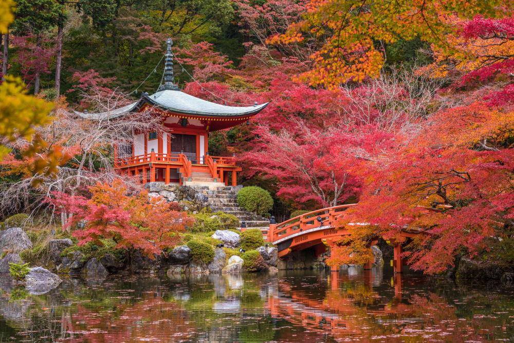

Kyoto

Kioto, como destacada ciudad cultural, posee un gran número de museos y centros culturales, de los cuales los más destacados quizás sean el Museo Nacional de Kioto, el Museo Internacional del Manga, el Museo de la Locomotora de vapor de Umekōji o el Museo de Historia Ryozen, a los que habría que añadir el Zoológico municipal de Kioto (el segundo abierto en Japón después del de Tokio). La ciudad es bien conocida por sus festivales tradicionales que se han mantenido durante más de 1000 años y que actualmente constituyen la mayor atracción turística de la ciudad.